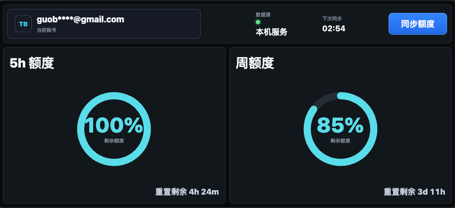

让额度一目了然，让旧设备重新有用。

Token BI 把 Token 用量转化为直观的仪表盘。将闲置设备连接到 Wi-Fi，就可以把它变成一块随时可见的额度看板。
让你的额度使用情况显而易见，任何闲置设备连上WIFI，即可展示Token用量仪表盘。
通过环形图呈现剩余额度，让使用情况更容易读懂。
在同一界面查看 5 小时额度、周额度与重置倒计时。
让连上 Wi-Fi 的闲置设备承担专用信息展示的角色。